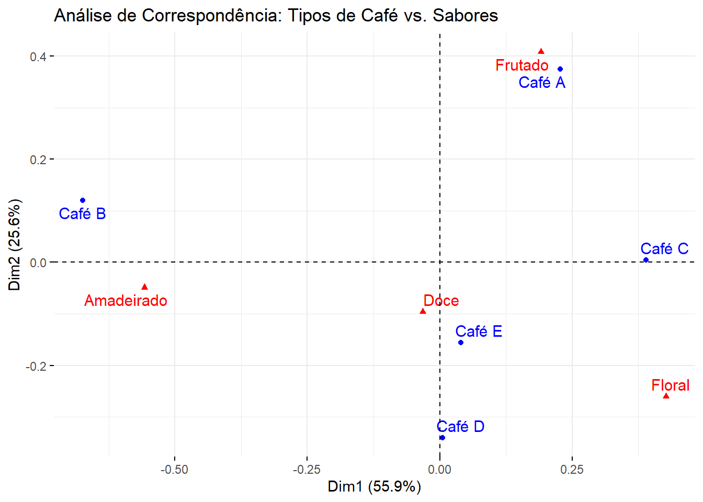

library(FactoMineR)
library(factoextra)
library(tidyverse)Análise da Percepção de Sabores de Café
Uma cafeteria gourmet deseja otimizar seu cardápio de cafés especiais para agradar a diferentes perfis de clientes. Eles realizaram uma pesquisa de mercado com 100 clientes, pedindo que avaliassem cinco tipos de café em relação à percepção de quatro atributos de sabor. A empresa quer identificar se existe uma associação entre os tipos de café e os atributos de sabor percebidos pelos clientes.
- Tipos de Café Avaliados:
- C1: Café A
- C2: Café B
- C3: Café C
- C4: Café D
- C5: Café E
- Atributos de Sabor:
- S1: Frutado
- S2: Amadeirado
- S3: Floral
- S4: Doce
A pergunta central é: A percepção de sabores frutados está mais associada a um tipo de café específico? E o que acontece com os outros sabores?
A Análise de Correspondência é a ferramenta ideal para responder a essa pergunta, pois ela analisa a associação entre duas variáveis categóricas (neste caso, “Tipos de Café” e “Atributos de Sabor”) e visualiza essa relação em um gráfico bidimensional.
Dados para Análise
Os dados são apresentados em uma tabela de contingência, onde as linhas representam os tipos de café e as colunas representam os atributos de sabor. Cada célula mostra a contagem de clientes que associaram um determinado tipo de café a um atributo de sabor.
| Sabor | ||||
|---|---|---|---|---|
| Tipos de Café | Frutado | Amadeirado | Floral | Doce |
| Café A | 20 | 5 | 8 | 15 |
| Café B | 10 | 25 | 2 | 10 |
| Café C | 15 | 8 | 20 | 5 |
| Café D | 5 | 12 | 15 | 18 |
| Café E | 8 | 10 | 12 | 14 |
Análise de correspondências no R
O script abaixo utiliza os pacotes FactoMineR e factoextra para realizar a análise e gerar um gráfico de alta qualidade, facilitando a interpretação dos resultados.
tab_cafe <- read.csv("https://raw.githubusercontent.com/tiagomartin/est022/refs/heads/main/dados/cafes.csv", encoding = "latin1", row.names = 1)
tab_cafe Frutado Amadeirado Floral Doce
Café A 20 5 8 15
Café B 10 25 2 10
Café C 15 8 20 5
Café D 5 12 15 18
Café E 8 10 12 14Com os dados já preparados na matriz de contingência tab_cafe, o próximo passo é realizar a Análise de Correspondência (AC). Para isso, utilizaremos a função CA() do pacote FactoMineR.
# A função 'CA' do pacote FactoMineR realiza a análise
res.ca <- CA(tab_cafe, graph = FALSE) # graph = FALSE para não gerar o gráfico automaticamenteCom os resultados da Análise de Correspondência (AC) armazenados na variável res.ca, o próximo passo é visualizar essas associações. A melhor forma de fazer isso é com um biplot, que plota as linhas (Tipos de Café) e as colunas (Atributos de Sabor) no mesmo gráfico.
Para criar um gráfico claro e de alta qualidade, utilizaremos a função fviz_ca_biplot() do pacote factoextra.
fviz_ca_biplot(res.ca, repel = TRUE, title = "Análise de Correspondência: Tipos de Café vs. Sabores")
Interpretação do Gráfico de Análise de Correspondência
O gráfico acima é um biplot de Análise de Correspondência, que mostra a associação entre dois conjuntos de variáveis categóricas: Tipos de Café (pontos azuis) e Atributos de Sabor (triângulos vermelhos).
A interpretação é baseada na proximidade dos pontos. Quanto mais próximos dois pontos estão, mais forte é a associação entre eles. A distância de um ponto até a origem (o centro, onde se cruzam as linhas pontilhadas) indica a sua contribuição para a inércia total, ou seja, quão distinta é sua associação.
Vamos analisar o gráfico por quadrantes:
Quadrante Superior Direito: O “Café A” está muito próximo do atributo “Frutado”. Isso significa que a percepção de sabor mais forte e distinta para o Café A é o sabor frutado. Ele é o café que mais se associa a esse atributo.
Quadrante Inferior Direito: O “Café C” e o atributo “Floral” estão no mesmo quadrante (café C no limite do quadrante), indicando uma forte associação. A maioria dos clientes que provaram o Café C o associou principalmente ao sabor floral. Está muito distante da origem, indicando que sua associação com o sabor Floral é extremamente forte e marcante. Ele tem um perfil de sabor muito distinto. Já o Café D está relativamente próximo da origem, sugerindo que suas associações com Doce e Floral não são tão fortes ou unânimes. Seu perfil de sabor é mais neutro ou menos “polarizado” na percepção dos clientes.
Quadrante Superior Esquerdo: O “Café B” e o atributo “Amadeirado” estão muito próximos. O Café B é o café com a percepção mais acentuada de sabor amadeirado. Essa é a característica que o distingue dos demais.
Quadrante Inferior Esquerdo: O “Café E” está próximo do atributo “Doce” e também do ponto de origem, mas no mesmo quadrante do Floral. O Café D tem um perfil de sabor que pode ser considerado uma mistura entre Doce e Floral.
Resumindo, o gráfico revela que os cafés A, B e C têm perfis de sabor bem definidos e distintos, que são consistentemente percebidos pelos clientes como frutado, amadeirado e floral, respectivamente. Já os cafés D e E, junto com o sabor “Doce”, têm associações mais fracas ou mais distribuídas, sugerindo que suas características são menos polarizadas ou mais comuns.
Essa interpretação pode ser usada pela cafeteria para criar estratégias de marketing mais eficazes, como, por exemplo, recomendar o “Café A” para clientes que preferem sabores frutados.